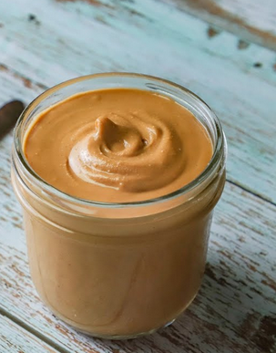

Fried potatoes

How to make fried potatoes
Prep time: 5 min
Cook time: 18 min
Ingredients
- 500 grams of raw pre-shelled peanuts
Steps
- Spread peanuts on a large baking sheet and roast in the oven at 175°C for ten to twelve minutes
- While the peanuts are still hot remove any skins from them. This is best done by wrapping a few handfuls at a time in a dish towel and rolling them against each other for several seconds.
- Put all your roasted and skinned peanuts in a food processor, add salt if desired, and chop until you have reached your desired thickness of peanut butter. (This may take a few minutes)